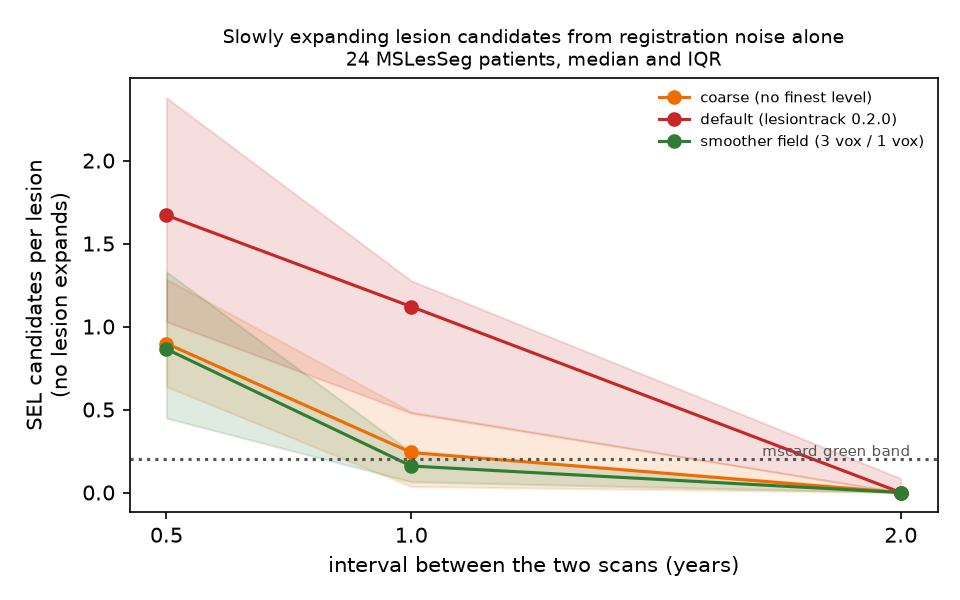
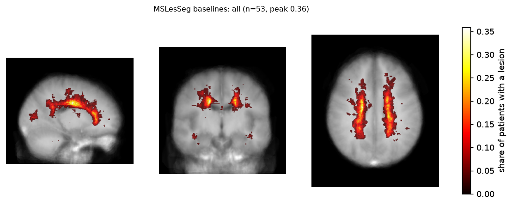
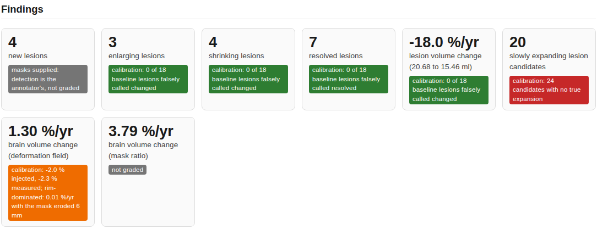

Six MIT-licensed Python packages for disability, relapses, NEDA, trial design, imaging and data quality. Every one reports how well it does its job on real data or on data with known truth, and several found problems in the data and methods the field already uses. Research software, not medical devices.
Try PIRA and NEDA in your browser: no install, no uploadFour results, each with its code and data in the linked repository.
With every lesion unchanged, the Elliott SEL rule still marks about one candidate per lesion at a one-year interval, 1.7 at six months, almost none at two years. A smoother registration brings it to 0.16 and, on 25 patients with injected expansion, still finds every expanding lesion (false positives 0.50 to 0.20). A SEL count means nothing without its interval and registration settings.

The same simulated cohort gives a PIRA share anywhere from 0.44 to 0.86 across 32 published definitions. The relapse window alone moves it by 32 points. With 30 % EDSS misrating, 27 % of 12-week confirmed events are noise, and they are called PIRA.
About half the lesion sites in MSLesSeg's multi-visit annotations appear and disappear in ways a chronic lesion does not, and in 11 of 24 patients the T1w of one visit separates grey and white matter while another's does not. The known-truth alternative: longphantom builds multi-visit series from one real scan; lesiontrack gets 24 of 24 lesion fates right on it.

mscard reports new, enlarging, shrinking and resolved lesions, SEL candidates and brain volume change. Before the report is written, it runs the same pipeline on the patient's own baseline with known changes injected, and every number carries a badge that says how much of that truth came back.

Built on lesiontrack (lesion tracking and slowly expanding lesions).